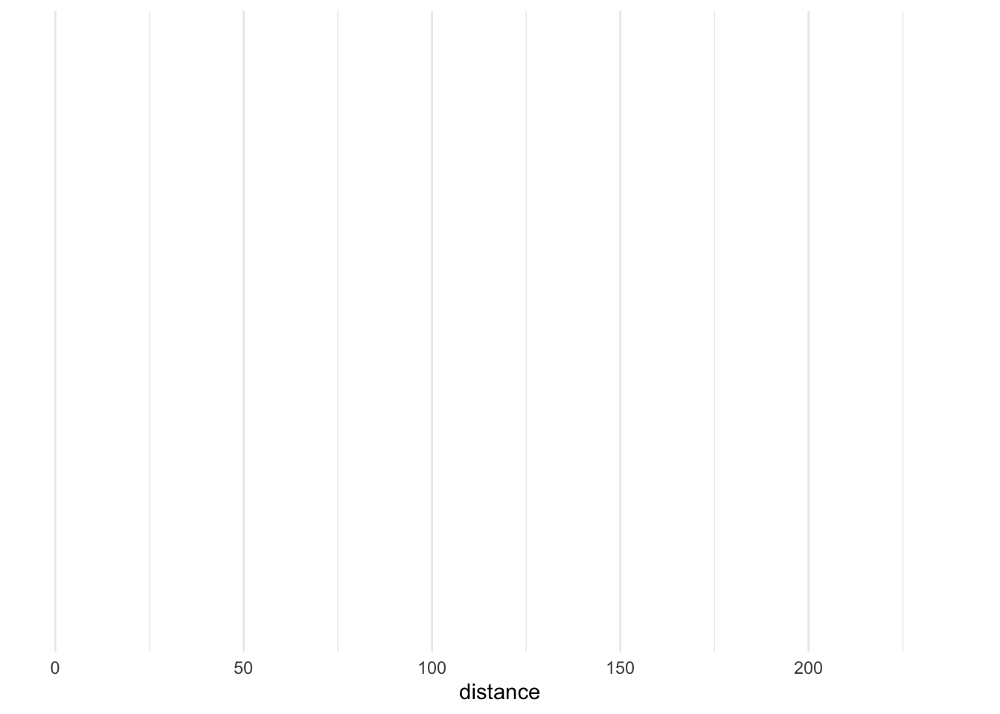
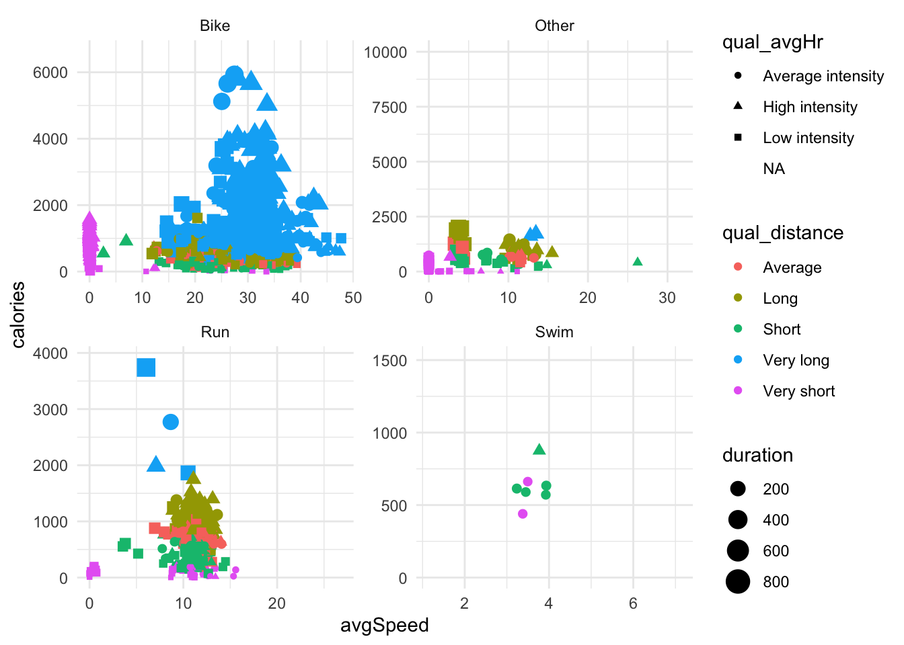
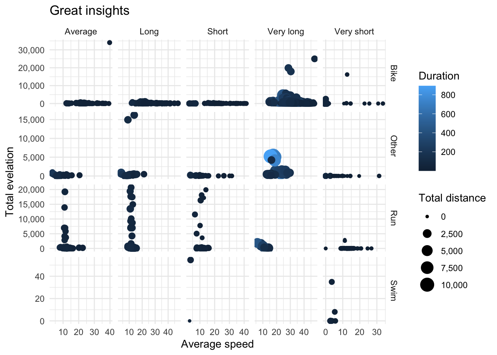
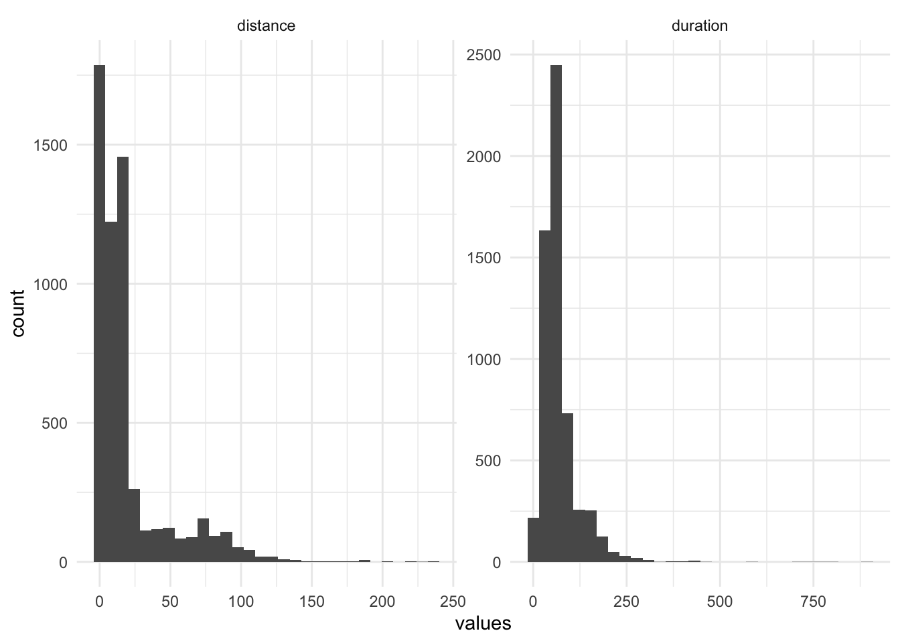
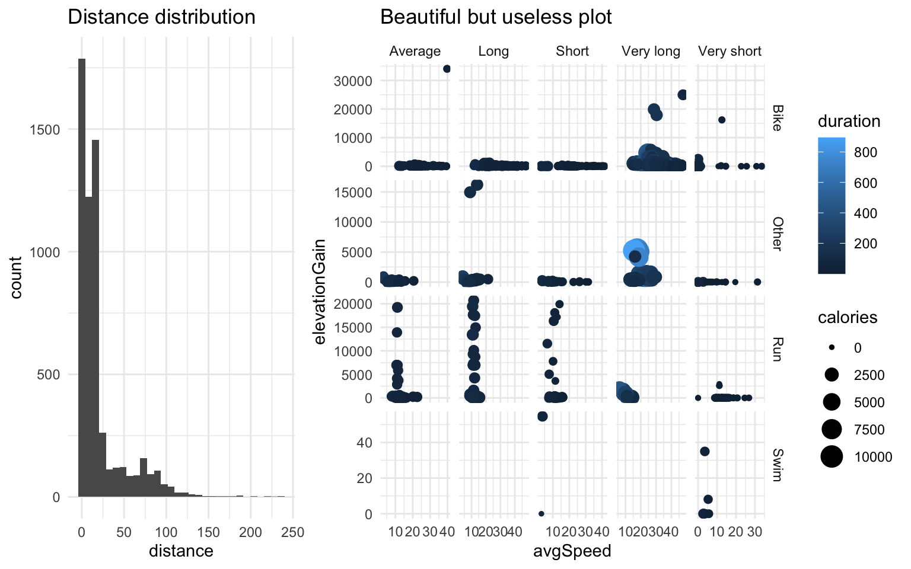
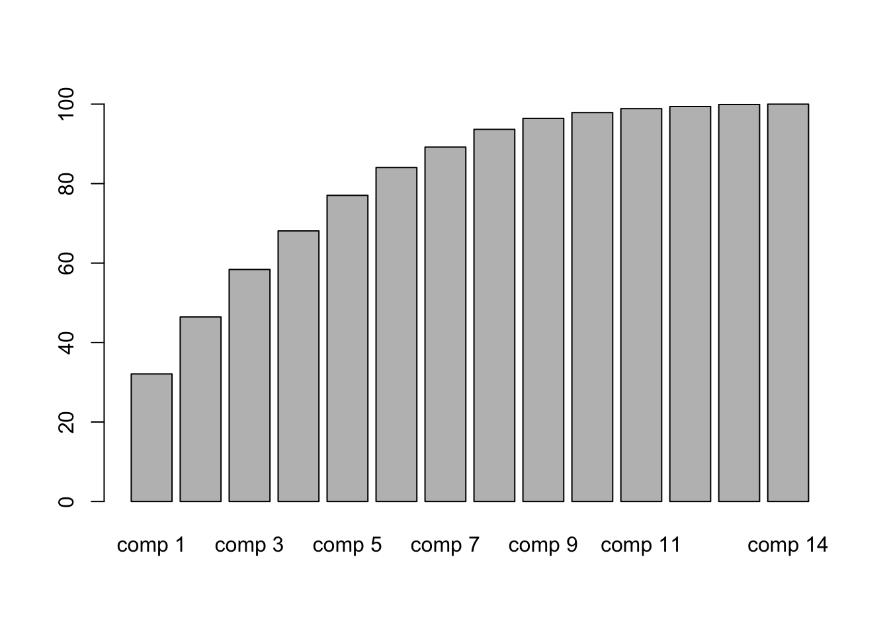
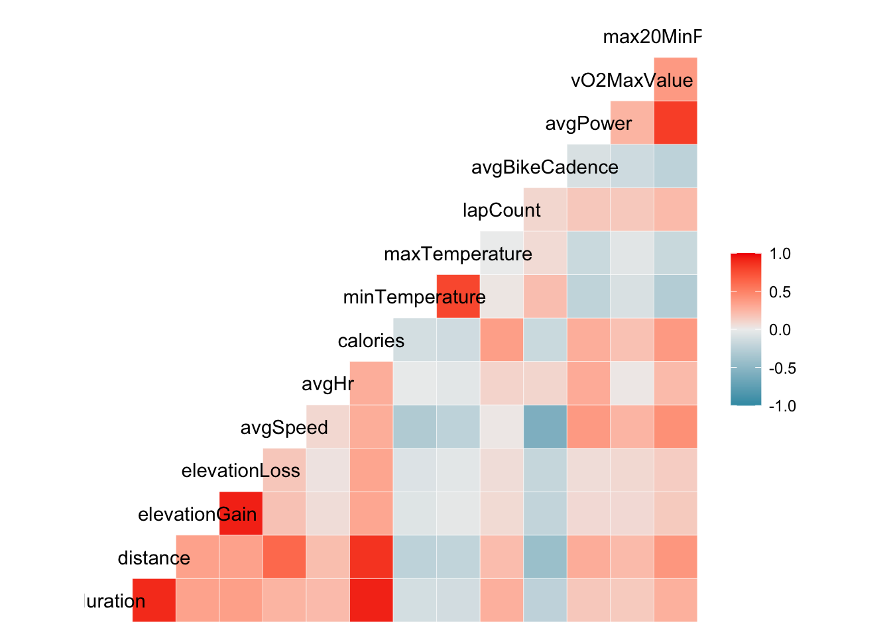

Chapter 6 Multivariate analysis and dimension reduction
6.1 Multivariate analysis
6.1.1 Advanced visualization
6.1.1.1 The grammar of graphics
The grammar of graphics was introduced in 2005 by Wilkinson and Leland as a general framework for graphical representation of data. It was adapted by Hadley Wickham in the R package ggplot2.
It presents a unique foundation for producing almost every quantitative graphic found in scientific journals, newspapers, statistical packages, and data visualization systems.
You can check the paper from Wickham
When ploting data, one has to define :
- What are the aesthetics \(\rightarrow\) the dimensions you want to represent
- What is the geometry you want to use \(\rightarrow\) the kind of plot you want
- Ploting options (that come with default values) :
- scales of the axis
- fonts and colors for text
- labels (title, axis titles…)
In short, what you have to find is the right combination of aesthetics and geometry that best represent the data. To find the recommended combination, don’t forget to use From data to viz
6.1.1.2 Playing with aesthetics
You must define at least 1 dimension for the plot, either continuous or categorical for the x axis. Then you can increase the number of dimensions (ie columns of the data frame) you want to represent :
- x and y for the axis
- size : optional (integer) dimension that will represent an additional number
- color/fill : optional (categorical) dimension reprensented by a color. Color is for line/point geoms, fill for bars/heatmap geoms
- linetype : optional (categorical) : different type of lines (solid, dotted, dashed…). Only for geometries using lines
- shape : optional (categorical) : variable that will make the shape of the dot vary. Only for point geometries
- alpha : optional (continuous) : the transparency of the dots (the lower the value, the more transparent the dot)
- …
More about the aesthetics here
You can also use the facet_wrap() or facet_grid() functions to add up to 2 more dimensions with categorical variables (see demo)
6.1.1.3 Geometries
Once you chose the variables (dimensions) you want to plot, you have to chose the geometry, that highly depends on the type of variable (numerical or character/factor). Don’t forget to reffer to the website from data to viz if you need some inspiration.
A short list of most common geometries :
- geom_bar for barplots
- geom_histogram for histograms
- geom_jitter for scatter plots
- geom_boxplot & geom_violin for compared density plots
- geom_tile for heatmaps
- geom_line for time series
- geom_text or geom_label for text (annotations)
- geom_hline and geom_vline for horizontal and vertiacal lines
- ……
# From
ggplot(dat_clean,aes(x=distance)) +
theme_minimal()
ggplot(dat_clean,aes(x=distance)) + geom_histogram()+
theme_minimal()
ggplot(dat_clean,aes(distance,avgSpeed)) + geom_jitter()+
theme_minimal()
ggplot(dat_clean,aes(distance,avgSpeed,color=activity_recoded)) +
geom_jitter()+
theme_minimal()# To
ggplot(dat_clean,aes(x=avgSpeed,y=calories,size=duration,
color=qual_distance,shape=qual_avgHr)) +
geom_jitter() +
facet_wrap(.~ activity_recoded,scales = "free")+
theme_minimal()
# Or maybe
ggplot(dat_clean,aes(x=avgSpeed,y=elevationGain,
size=calories,color=duration)) +
geom_jitter() +
facet_grid(activity_recoded~qual_distance,scales = "free" )+
theme_minimal()
6.1.1.4 Important options
With ggplot, one can make publishable graphics that don’t need to be modified in another software. For that, the most useful functions are :
- scale_xx_yy : functions that allow you to tweak the axis’ scale, the colors used by either
colororfillaesthetics (eg :scale_color_manual()) and other options. - labs : allows you to proper label title, axis’ titles, legend titles…
- theme : allows you to tweak general parameters for the plot (font family, font size, margins, background colors…). You have several
theme_xx()functions already defined with different default values for those parameters (egtheme_minimal()ortheme_void()) - guides : allows you to modify the legend entries
Whats you can also do is recode the levels of the factor variables to make them more understanble or reorder them if you want them to be displayed in a specific order. See forcats::fct_recode() and forcats::fct_reorder()
Hint : when working with strings, you can force a string to be split in 2 rows with \n
Here is an example :
dat_clean %>%
ggplot(aes(x=avgSpeed,y=elevationGain,size=calories,color=duration,size=distance)) +
geom_jitter() +
facet_grid(activity_recoded~qual_distance,scales = "free" ) +
theme_minimal() +
labs(title="Great insights",y="Total evelation",x="Average speed",
color="Duration",size="Total distance") +
# scale_color_manual(values = c("magenta","orange")) +
scale_size_continuous(labels=scales::comma) +
scale_y_continuous(labels=scales::comma) +
scale_x_continuous(labels=scales::comma)+
theme_minimal()
6.1.1.5 Some tricks with ggplot
This approach (grammar of graphics) is very coherent but makes it sometimes difficult. For example, how can I represent the distribution of several variables (and not the distribution of one variable according to different sub-groups -meaning that there is a second dimension -) ?
6.1.1.5.1 The cheater way
You can brute-force the graph by superposing different geometries. But first, you’ll have to standardize the variables (they don’t have the same scale). Remember the usage of across to apply a function to a selection of variables.
mutate(dat_clean,across(where(is.numeric),
function(xx) (xx-mean(xx,na.rm=T))/sd(xx,na.rm=T))) %>%
ggplot() + geom_density(aes(distance),color="blue") +
geom_density(aes(duration),color="red")+
theme_minimal()
This solution can be also used if you want to superpose different geometries (bars and lines, bars and hlines,…), and is in this case legal :D
6.1.1.5.2 Do it with the tidy philosophy
You can reformulate this task as : I want to represent the distribution of one unique variable for 2 subgroups : distance and duration. I have to reshape the data first to create such a variable. For that I will use tidyr::pivot_longer() which helps me to transform columns into rows.
reshaped <- select(dat_clean,duration,distance) %>%
pivot_longer(cols = everything(),names_to="latent_variable",values_to="values")
reshaped## # A tibble: 11,600 × 2
## latent_variable values
## <chr> <dbl>
## 1 duration 71.2
## 2 distance 3.4
## 3 duration 37.9
## 4 distance 27.7
## 5 duration 28.4
## 6 distance 16.4
## 7 duration 70.4
## 8 distance 15.0
## 9 duration 10.4
## 10 distance 6.24
## # … with 11,590 more rowsNow I can use the latent_variable variable as a dimension in a classic ggplot statement, with a prior standardization
group_by(reshaped,latent_variable) %>%
mutate(values=(values-mean(values,na.rm = T))/sd(values,na.rm = T)) %>%
ggplot(aes(values,color=latent_variable)) + geom_histogram()+
theme_minimal()
Or you can even skip the standardization step thanks to facets :
ggplot(reshaped,aes(values)) + geom_histogram() +
facet_wrap(.~latent_variable,scales = "free")+
theme_minimal()
6.1.1.5.3 Combine different plots with ggpubr
ggpubr makes your life much easier to make publication-ready graphics. It allows you for example to combine several ggplot graphics in a grid, regardless of any latent dimension that facet_grid would require. For that you have to store the graphics and “replay” them in a defined grid generated by ggarrange()
# install.packages("ggpubr")
require(ggpubr)
gg1 <- ggplot(dat_clean,aes(distance)) + geom_histogram() +
labs(title = "Distance distribution")+
theme_minimal()
gg2 <- ggplot(dat_clean,aes(x=avgSpeed,y=elevationGain,
size=calories,color=duration,size=distance)) +
geom_jitter() +
facet_grid(activity_recoded~qual_distance,scales = "free" ) +
theme_minimal() + labs(title = "Beautiful but useless plot")+
theme_minimal()
ggarrange(gg1,gg2,ncol = 2,widths = c(1,2))
There are a lot of options in this function (common legend, height and width of each plot,…). You can check the full documentation of this package.
Note that you can mix tables and graphics with this function. Tables can be rendered as ggplot object with ggpubr::ggtexttable()
6.1.2 Easily explore an entire dataset
Now, you know how to produce one graph including several dimensions. To explore a new dataset and identify the correlations between them, you can visualize at a glance all variables in a datasets and their correlations with GGally
6.1.2.1 Scatter plot matrix
The scatter plot matrix shows the correlations between all variables and helps you to spot dependencies between them. We can use either the basic plot() function on the dataframe or the GGally package which provides nice extensions to ggplot.
Side note : the ggpairs() function does a lot of computation and can take a lot of time ! \(\rightarrow\) if your dataset is large, you should run it only on a sample of the observations with dplyr::sample_n() or dplyr::sample_frac() or only on a selection of columns.
select(dat_clean,distance,duration,avgHr,avgSpeed,avgPower,
calories,elevationGain,avgBikeCadence,activity_recoded) %>%
plot()
# install.packages("GGally")
require(GGally)
select(dat_clean,distance,duration,avgSpeed,
calories,activity_recoded) %>%
GGally::ggpairs()
6.1.2.2 Correlation plots
select(dat_clean,distance,duration,avgHr,avgSpeed,avgPower,
calories,elevationGain,avgDoubleCadence,activity_recoded) %>%
GGally::ggcorr(geom = "circle")
6.2 Multivariate analysis and dimension reduction
In this section, we will focus on the bike activities, which have the highest number of metrics. However, before we can go further, we have to deal with missing data and scale them to avoid that the column with a large order of magnitude are over-weighted.
6.2.1 Imputation
So far, we have ignored the missing values because we were computing summary statistics on one or 2 variables. The problem when taking into account more columns is that the probability of having one missing value on one of these features is higher, and therefore the risk that the whole observation is ignored increases. Every observation should still contain some original information that an analysis (or a model) should reflect. To avoid to ignore to many observations because of missing data we perform imputation, meaning that we replace the missing value with a true value. Many methods can be used to that end :
For numeric variables
- Imputation with a random value from the sample
- Imputation with the mean/median
- Imputation with the nearest neighbours (k-nn)
- Hotdeck
- Imputation with a model (regression)
For categorical variables :
- Imputation with random category selection
- Imputation with the most frequent category (total or of the neighbours)
- Hotdeck
- Model-based imputation
The challenge here is to chose between “reflecting the instance’s originality” or “not creating noise”
The following code counts the number of missing values per column and does a simple mean or median imputation. We will practice hte imputation via regression in the final chapter’s exercises.
dat_bike <- filter(dat_clean,is_bike) # Bike activities
sapply(dat_bike,function(xx) sum(is.na(xx)))## activityId uuidMsb uuidLsb
## 0 934 934
## name activityType userProfileId
## 230 0 0
## timeZoneId beginTimestamp eventTypeId
## 0 0 0
## rule sportType startTimeGmt
## 0 1263 0
## startTimeLocal duration distance
## 0 0 1
## avgSpeed avgHr maxHr
## 2 666 665
## avgPower avgBikeCadence maxBikeCadence
## 1842 1198 1198
## calories aerobicTrainingEffect strokes
## 2 1521 1207
## normPower avgLeftBalance avgRightBalance
## 1842 2192 2192
## max20MinPower avgFractionalCadence maxFractionalCadence
## 1876 0 0
## trainingStressScore intensityFactor elapsedDuration
## 2177 2177 1191
## movingDuration anaerobicTrainingEffect deviceId
## 1551 2350 853
## minTemperature maxTemperature lapCount
## 1288 1288 1644
## aerobicTrainingEffectMessage anaerobicTrainingEffectMessage purposeful
## 2835 2835 0
## autoCalcCalories favorite pr
## 1247 0 0
## elevationCorrected atpActivity parent
## 873 1830 476
## elevationGain elevationLoss maxSpeed
## 175 176 494
## maxRunCadence steps startLongitude
## 2834 2834 582
## startLatitude avgVerticalOscillation avgGroundContactTime
## 582 2835 2835
## avgStrideLength vO2MaxValue avgVerticalRatio
## 2834 2608 2835
## avgGroundContactBalance minElevation maxElevation
## 2835 1019 1019
## avgDoubleCadence maxDoubleCadence locationName
## 2834 2834 1969
## maxVerticalSpeed endLongitude endLatitude
## 1710 2420 2420
## avgStrokes activeLengths avgSwolf
## 2835 2653 2835
## poolLength avgStrokeDistance avgSwimCadence
## 2835 2835 2835
## maxSwimCadence workoutId activeSets
## 2835 2715 2198
## totalSets totalReps parentId
## 2198 2198 2822
## manufacturer courseId maxFtp
## 2835 2832 2737
## avgVerticalSpeed decoDive lactateThresholdBpm
## 2835 2730 2835
## lactateThresholdSpeed start_time date
## 2835 0 0
## is_bike is_run activity_recoded
## 0 0 0
## qual_distance qual_avgHr
## 0 1051For this use case, we will use a median imputation, because for some of the variables, the mean would not make sense (eg longitude and latitude).
dat_bike_imp <- mutate(dat_bike,across(where(is.numeric),
function(xx) ifelse(is.na(xx),median(xx,na.rm=T),xx)))
sapply(dat_bike_imp,function(xx) sum(is.na(xx)))## activityId uuidMsb uuidLsb
## 0 934 934
## name activityType userProfileId
## 230 0 0
## timeZoneId beginTimestamp eventTypeId
## 0 0 0
## rule sportType startTimeGmt
## 0 1263 0
## startTimeLocal duration distance
## 0 0 0
## avgSpeed avgHr maxHr
## 0 0 0
## avgPower avgBikeCadence maxBikeCadence
## 0 0 0
## calories aerobicTrainingEffect strokes
## 0 0 0
## normPower avgLeftBalance avgRightBalance
## 0 0 0
## max20MinPower avgFractionalCadence maxFractionalCadence
## 0 0 0
## trainingStressScore intensityFactor elapsedDuration
## 0 0 0
## movingDuration anaerobicTrainingEffect deviceId
## 0 0 853
## minTemperature maxTemperature lapCount
## 0 0 0
## aerobicTrainingEffectMessage anaerobicTrainingEffectMessage purposeful
## 2835 2835 0
## autoCalcCalories favorite pr
## 0 0 0
## elevationCorrected atpActivity parent
## 0 0 0
## elevationGain elevationLoss maxSpeed
## 0 0 0
## maxRunCadence steps startLongitude
## 0 0 0
## startLatitude avgVerticalOscillation avgGroundContactTime
## 0 2835 2835
## avgStrideLength vO2MaxValue avgVerticalRatio
## 2834 0 2835
## avgGroundContactBalance minElevation maxElevation
## 2835 0 0
## avgDoubleCadence maxDoubleCadence locationName
## 0 0 1969
## maxVerticalSpeed endLongitude endLatitude
## 0 0 0
## avgStrokes activeLengths avgSwolf
## 2835 0 2835
## poolLength avgStrokeDistance avgSwimCadence
## 2835 2835 2835
## maxSwimCadence workoutId activeSets
## 2835 2715 0
## totalSets totalReps parentId
## 0 0 2822
## manufacturer courseId maxFtp
## 2835 2832 0
## avgVerticalSpeed decoDive lactateThresholdBpm
## 2835 0 2835
## lactateThresholdSpeed start_time date
## 2835 0 0
## is_bike is_run activity_recoded
## 0 0 0
## qual_distance qual_avgHr
## 0 1051Let’s do the same for categorical (maximum frequency), even though it is not mandatory for PCA. We first have to create a function that will return the most frequent category of a vector.
most_freq_cat <- function(xx)
{
tab <- table(xx)
return(names(tab[which.max(tab)]))
}
dat_bike_imp <- mutate(dat_bike_imp,across(where(is.character),
function(xx) coalesce(xx,most_freq_cat(xx))))
sapply(dat_bike_imp,function(xx) sum(is.na(xx)))## activityId uuidMsb uuidLsb
## 0 0 0
## name activityType userProfileId
## 0 0 0
## timeZoneId beginTimestamp eventTypeId
## 0 0 0
## rule sportType startTimeGmt
## 0 0 0
## startTimeLocal duration distance
## 0 0 0
## avgSpeed avgHr maxHr
## 0 0 0
## avgPower avgBikeCadence maxBikeCadence
## 0 0 0
## calories aerobicTrainingEffect strokes
## 0 0 0
## normPower avgLeftBalance avgRightBalance
## 0 0 0
## max20MinPower avgFractionalCadence maxFractionalCadence
## 0 0 0
## trainingStressScore intensityFactor elapsedDuration
## 0 0 0
## movingDuration anaerobicTrainingEffect deviceId
## 0 0 0
## minTemperature maxTemperature lapCount
## 0 0 0
## aerobicTrainingEffectMessage anaerobicTrainingEffectMessage purposeful
## 2835 2835 0
## autoCalcCalories favorite pr
## 0 0 0
## elevationCorrected atpActivity parent
## 0 0 0
## elevationGain elevationLoss maxSpeed
## 0 0 0
## maxRunCadence steps startLongitude
## 0 0 0
## startLatitude avgVerticalOscillation avgGroundContactTime
## 0 2835 2835
## avgStrideLength vO2MaxValue avgVerticalRatio
## 0 0 2835
## avgGroundContactBalance minElevation maxElevation
## 2835 0 0
## avgDoubleCadence maxDoubleCadence locationName
## 0 0 0
## maxVerticalSpeed endLongitude endLatitude
## 0 0 0
## avgStrokes activeLengths avgSwolf
## 2835 0 2835
## poolLength avgStrokeDistance avgSwimCadence
## 2835 2835 2835
## maxSwimCadence workoutId activeSets
## 2835 0 0
## totalSets totalReps parentId
## 0 0 0
## manufacturer courseId maxFtp
## 2835 0 0
## avgVerticalSpeed decoDive lactateThresholdBpm
## 2835 0 2835
## lactateThresholdSpeed start_time date
## 2835 0 0
## is_bike is_run activity_recoded
## 0 0 0
## qual_distance qual_avgHr
## 0 0# replacements <- select(dat_bike_imp,activityId,where(is.character)) %>%
# pivot_longer(-activityId,names_to="name",values_to="val") %>%
# filter(!is.na(val)) %>%
# group_by(name,val) %>%
# summarise(cat_nb=n()) %>%
# arrange(name,-cat_nb) %>%
# group_by(name) %>%
# summarise(most_freq=first(val)) %>%
# pivot_wider(names_from = name,values_from=most_freq) %>%
# rename_with(function(xx) paste0(xx,"_imp"))Some of the variables contain only missing values (and cannot be imputed) \(\rightarrow\) we drop them
missing <- which(sapply(dat_bike_imp,function(xx) sum(is.na(xx)))>0) %>% names()
dat_bike_imp <- select(dat_bike_imp,-missing)6.2.2 Normalization
Normalization is the operation consisting in scaling the columns so that their unit do not matter in the end. For example, the distance in meter is much larger than the cadence or the power, which have totally different units. To normalize the columns and make them unit-less, there are several methods among which the most common are the following :
- Standardization : \(X_i^{std} = \dfrac{X_i-\bar{X}}{\sigma_X} \rightarrow\) mean 0 and standard deviation 1
- Min-Max scaling : \(X_i^{std} = \dfrac{X_i-min(X)}{max(X)-min(X)} \rightarrow\) between 0 and 1
- Robust standardization \(X_i^{std} = \dfrac{X_i-Q2(X)}{Q3(X)-Q1(X)} \rightarrow\) similar to the first option but robust to outliers
You can check scikit-learn’s documentation to see what other options you have (and then search for their R implementation).
Normalization is a mandatory step before fitting a model, in order to avoid that only one feature bears the majority of the variance and makes the model biased.
6.2.3 PCA
Principal Components Analysis (PCA) is often seen by machine learning engineers “only” as a dimension reduction technique, but it is also a very powerful tool to explore your data. PCA applies on numerical variables only, and aims to create new synthetic and uncorrelated variables : principal components (as a linear combination of the original variables) such that the inertia (ie variance) is highly concentrated on a small number of variables.
The mathematical problem is to find eigenvalues and eigenvectors of the correlation matrix. The eigenvectors represent the linear combination of the original variables needed to design those new variables, and the eigenvalues the variance that each of these new value bears. Once those new variables have been found, graphical representations within a few dimensions are possible.
To apply PCA, we will use the FactoMineR package, very easy to use for multivariate analysis.
Notes :
- You can have supplementary continuous or categorical variables. They won’t be used in the construction of the eigenvectors, but you will be able to place them in the newly defined vector space.
- By default, almost all implementations of PCA standardizes the data, so you do not have to do it by yourself, but check in the documentation of the function you use
# install.packages("FactoMineR")
require(FactoMineR)
acp_dat <- select(dat_bike_imp,deviceId,duration,distance,elevationGain,elevationLoss,avgSpeed,avgHr,calories,
minTemperature,maxTemperature,lapCount,avgBikeCadence,avgPower,vO2MaxValue,
max20MinPower)
acp <- PCA(acp_dat,graph = F,quali.sup = c(1))What’s in this new object ?
str(acp)## List of 6
## $ eig : num [1:14, 1:3] 4.49 2.01 1.67 1.36 1.25 ...
## ..- attr(*, "dimnames")=List of 2
## .. ..$ : chr [1:14] "comp 1" "comp 2" "comp 3" "comp 4" ...
## .. ..$ : chr [1:3] "eigenvalue" "percentage of variance" "cumulative percentage of variance"
## $ var :List of 4
## ..$ coord : num [1:14, 1:5] 0.781 0.897 0.503 0.498 0.643 ...
## .. ..- attr(*, "dimnames")=List of 2
## .. .. ..$ : chr [1:14] "duration" "distance" "elevationGain" "elevationLoss" ...
## .. .. ..$ : chr [1:5] "Dim.1" "Dim.2" "Dim.3" "Dim.4" ...
## ..$ cor : num [1:14, 1:5] 0.781 0.897 0.503 0.498 0.643 ...
## .. ..- attr(*, "dimnames")=List of 2
## .. .. ..$ : chr [1:14] "duration" "distance" "elevationGain" "elevationLoss" ...
## .. .. ..$ : chr [1:5] "Dim.1" "Dim.2" "Dim.3" "Dim.4" ...
## ..$ cos2 : num [1:14, 1:5] 0.61 0.805 0.253 0.248 0.413 ...
## .. ..- attr(*, "dimnames")=List of 2
## .. .. ..$ : chr [1:14] "duration" "distance" "elevationGain" "elevationLoss" ...
## .. .. ..$ : chr [1:5] "Dim.1" "Dim.2" "Dim.3" "Dim.4" ...
## ..$ contrib: num [1:14, 1:5] 13.58 17.92 5.64 5.53 9.2 ...
## .. ..- attr(*, "dimnames")=List of 2
## .. .. ..$ : chr [1:14] "duration" "distance" "elevationGain" "elevationLoss" ...
## .. .. ..$ : chr [1:5] "Dim.1" "Dim.2" "Dim.3" "Dim.4" ...
## $ ind :List of 4
## ..$ coord : num [1:2835, 1:5] 2.388 -0.877 -1.489 1.153 1.503 ...
## .. ..- attr(*, "dimnames")=List of 2
## .. .. ..$ : chr [1:2835] "1" "2" "3" "4" ...
## .. .. ..$ : chr [1:5] "Dim.1" "Dim.2" "Dim.3" "Dim.4" ...
## ..$ cos2 : num [1:2835, 1:5] 0.148 0.157 0.125 0.201 0.267 ...
## .. ..- attr(*, "dimnames")=List of 2
## .. .. ..$ : chr [1:2835] "1" "2" "3" "4" ...
## .. .. ..$ : chr [1:5] "Dim.1" "Dim.2" "Dim.3" "Dim.4" ...
## ..$ contrib: num [1:2835, 1:5] 0.04478 0.00604 0.01741 0.01044 0.01774 ...
## .. ..- attr(*, "dimnames")=List of 2
## .. .. ..$ : chr [1:2835] "1" "2" "3" "4" ...
## .. .. ..$ : chr [1:5] "Dim.1" "Dim.2" "Dim.3" "Dim.4" ...
## ..$ dist : Named num [1:2835] 6.22 2.22 4.21 2.57 2.91 ...
## .. ..- attr(*, "names")= chr [1:2835] "1" "2" "3" "4" ...
## $ svd :List of 3
## ..$ vs: num [1:14] 2.12 1.42 1.29 1.17 1.12 ...
## ..$ U : num [1:2835, 1:5] 1.127 -0.414 -0.703 0.544 0.709 ...
## ..$ V : num [1:14, 1:5] 0.369 0.423 0.238 0.235 0.303 ...
## $ quali.sup:List of 5
## ..$ coord : num [1:10, 1:5] 3.50332 0.58334 0.47068 -0.12367 0.00898 ...
## .. ..- attr(*, "dimnames")=List of 2
## .. .. ..$ : chr [1:10] "3355158044" "3454054575" "3825981698" "3842681113" ...
## .. .. ..$ : chr [1:5] "Dim.1" "Dim.2" "Dim.3" "Dim.4" ...
## ..$ cos2 : num [1:10, 1:5] 8.00e-01 1.25e-01 1.14e-01 9.20e-03 4.37e-05 ...
## .. ..- attr(*, "dimnames")=List of 2
## .. .. ..$ : chr [1:10] "3355158044" "3454054575" "3825981698" "3842681113" ...
## .. .. ..$ : chr [1:5] "Dim.1" "Dim.2" "Dim.3" "Dim.4" ...
## ..$ v.test: num [1:10, 1:5] 10.65797 0.38925 4.32709 -0.13055 0.00734 ...
## .. ..- attr(*, "dimnames")=List of 2
## .. .. ..$ : chr [1:10] "3355158044" "3454054575" "3825981698" "3842681113" ...
## .. .. ..$ : chr [1:5] "Dim.1" "Dim.2" "Dim.3" "Dim.4" ...
## ..$ dist : Named num [1:10] 3.92 1.65 1.4 1.29 1.36 ...
## .. ..- attr(*, "names")= chr [1:10] "3355158044" "3454054575" "3825981698" "3842681113" ...
## ..$ eta2 : num [1, 1:5] 0.1774 0.0959 0.0819 0.2092 0.0293
## .. ..- attr(*, "dimnames")=List of 2
## .. .. ..$ : chr "deviceId"
## .. .. ..$ : chr [1:5] "Dim.1" "Dim.2" "Dim.3" "Dim.4" ...
## $ call :List of 10
## ..$ row.w : num [1:2835] 0.000353 0.000353 0.000353 0.000353 0.000353 ...
## ..$ col.w : num [1:14] 1 1 1 1 1 1 1 1 1 1 ...
## ..$ scale.unit: logi TRUE
## ..$ ncp : num 5
## ..$ centre : num [1:14] 77.4 31.4 376.1 325.7 22 ...
## ..$ ecart.type: num [1:14] 57.6 34.3 1079.8 1059.3 12.4 ...
## ..$ X :'data.frame': 2835 obs. of 15 variables:
## .. ..$ deviceId : Factor w/ 10 levels "3355158044","3454054575",..: 3 3 3 3 3 3 3 3 3 3 ...
## .. ..$ duration : num [1:2835] 37.9 28.4 10.4 65.9 71.5 ...
## .. ..$ distance : num [1:2835] 27.71 16.4 6.24 49.27 52.1 ...
## .. ..$ elevationGain : num [1:2835] 325 76 38 266 266 ...
## .. ..$ elevationLoss : num [1:2835] 0 0 0 0 0 0 0 0 0 0 ...
## .. ..$ avgSpeed : num [1:2835] 43.9 34.6 36.1 44.9 43.7 ...
## .. ..$ avgHr : int [1:2835] 168 135 138 130 158 149 141 149 152 149 ...
## .. ..$ calories : num [1:2835] 742 392 110 1025 1124 ...
## .. ..$ minTemperature: int [1:2835] 18 18 18 18 18 18 18 18 18 18 ...
## .. ..$ maxTemperature: int [1:2835] 27 27 27 27 27 27 27 27 27 27 ...
## .. ..$ lapCount : int [1:2835] 1 1 1 1 1 1 1 1 1 1 ...
## .. ..$ avgBikeCadence: int [1:2835] 86 83 78 84 88 85 74 69 88 86 ...
## .. ..$ avgPower : int [1:2835] 333 240 186 266 270 241 239 280 270 228 ...
## .. ..$ vO2MaxValue : int [1:2835] 65 65 65 65 65 65 65 65 65 65 ...
## .. ..$ max20MinPower : num [1:2835] 342 252 278 292 299 ...
## ..$ row.w.init: num [1:2835] 1 1 1 1 1 1 1 1 1 1 ...
## ..$ call : language PCA(X = acp_dat, quali.sup = c(1), graph = F)
## ..$ quali.sup :List of 5
## .. ..$ quali.sup :'data.frame': 2835 obs. of 1 variable:
## .. .. ..$ deviceId: Factor w/ 10 levels "3355158044","3454054575",..: 3 3 3 3 3 3 3 3 3 3 ...
## .. ..$ modalite : int 10
## .. ..$ nombre : num [1:10] 41 2 335 5 3 90 15 309 1550 485
## .. ..$ barycentre:'data.frame': 10 obs. of 14 variables:
## .. .. ..$ duration : num [1:10] 145.5 96.9 61.9 65.9 110.1 ...
## .. .. ..$ distance : num [1:10] 77.2 42.4 37 34.3 30.5 ...
## .. .. ..$ elevationGain : num [1:10] 700 298 367 250 490 ...
## .. .. ..$ elevationLoss : num [1:10] 706 271 0 261 468 ...
## .. .. ..$ avgSpeed : num [1:10] 31.92 25.22 35.89 28.42 9.52 ...
## .. .. ..$ avgHr : num [1:10] 139 145 140 125 134 ...
## .. .. ..$ calories : num [1:10] 2238 1894 907 593 1018 ...
## .. .. ..$ minTemperature: num [1:10] 15.2 18 18 18 18 ...
## .. .. ..$ maxTemperature: num [1:10] 23.5 27 27 27 27 ...
## .. .. ..$ lapCount : num [1:10] 17.71 3 6.97 3 3 ...
## .. .. ..$ avgBikeCadence: num [1:10] 85.2 95.5 86.4 84.6 85.3 ...
## .. .. ..$ avgPower : num [1:10] 257 243 251 243 243 ...
## .. .. ..$ vO2MaxValue : num [1:10] 68.6 65 65 65 65 ...
## .. .. ..$ max20MinPower : num [1:10] 309 278 281 278 278 ...
## .. ..$ numero : num 1
## - attr(*, "class")= chr [1:2] "PCA" "list"This is a list with several elements :
eigcontains the eigenvalues, and their share in the total inertia (PCA is performed by default on scaled variables \(\rightarrow\) the trace of the diagonal matrix equals to the number of columns)indandvarrefer to rows and columns. They both have the same elements : “coord” for the coordinates on each principal component, “contr” the contributions to the inertia of this row (resp column) to the inertia of the component, “cos2” the squared cosine (ie quality of projection) for the row/columnquali.suphave the same elements than the previous ones (coordinates are the barycenter of each category of the qualitative variable) plus the \(\eta^2\) statistic.
The first thing is to have a look at the eignevalues to see how well the PCA could summarize the information
barplot(acp$eig[,2])barplot(acp$eig[,3])
In our case, the first component bears 35% of the total inertia and the second 15%. Hence, the first factorial plane (the first 2 components) : let’s look at how the variable correlate with them :
plot.PCA(acp,choix="var",col.var = "blue")
What you can read at once on this plot is how important each variable is to construct the new variables. As a matter of fact, contribution, cos2 and coordinates are almost the same in PCA, meaning that the closer to the unit disc the coordinate is, the higher both contribution and quality of representation.
What we deduct from this graph :
- Distance, calories and duration have the largest values on the first component \(\rightarrow\) they contribute largely to the first component, which bears the 35% of total variance \(\rightarrow\) those variables are the most discriminant
- Those three variables are very close to each other, which means they are highly correlated
- The average cadence is on the other side of the first component \(\rightarrow\) it is negatively correlated with those variables
- There is a right angle between elevationGain and avgPower \(\rightarrow\) the correlation is very small
Let’s check the correlation matrix to be sure about what we are reading here
select(acp_dat,-deviceId) %>%
GGally::ggcorr()
How about the individuals ?
plot.PCA(acp,choix="ind")This graph is harder to read, but we still can identify outliers and understand what they are. Anyway in the top-right corner, those are long rides with a lot of ups and downs ! The most extreme is 742999663 which is another measurement error (indoor cycling with 34000 elevation meters !)
6.2.4 Exercises
- Remove the measurement errors and re-run the PCA ; what are the changes ?
- Let’s focus the running activities : select relevant features, impute the missing values using k-nn, run a PCA and analyze the results
6.3 Dimension reduction
Dimension reduction aims to reduce the size of the data ; most of the time the goal is to decrease the number of columns but it can also apply to rows (depending on your use case). Why reduce the dimension :
- Avoid the curse of dimensionality
- Remove undesired noise
- Avoid multicollinearity in the features
Dimension reduction is, after normalization, a very common step to take prior training a machine learning algorithm.
6.3.1 Use the results of the PCA
After performing a PCA, you can select a limited number of principal components that you will use further in the modeling task. You can chose the number of components to keep with several criteria :
- average inertia (eigenvalue > 1)
- minimal total inertia (eg 80%)
- elbow criteria : keep components before there is a “drop” in the eigenvalues barplot
6.3.2 Other inertia-based methods
PCA is designed only for continuous variables, but you can use other methods for other types of data :
- MCA (Multiple Correspondence Analysis ) for categorical variables (if you have a mixture of continuous and categorical, you can discretize numerical variables and perform MCA)
- FDA (Functional Data Analysis for functions/curves)
6.3.3 t-SNE
6.3.3.1 Algorithm description
t-SNE has a completely different approach to dimension reduction : it does not aim to preserve the total variance, but rather the proximity between the observations.
The algorithm has 3 steps :
- Compute the similarity between each pair of points using a gaussian distribution (instead of a raw euclidean distance) \(\Rightarrow\) n collections (distributions) of similarity scores in the high-dimensional space
- Initiate a low-dimensional space and map all high-dimensional points on it. Compute the same pairwise similarities with Student distribution (hence the t in t-SNE) in this space \(\Rightarrow\) n collections (distributions) of similarity scores in the low-dimensional space
- Gradually move the points in the low-dimensional space so that the sum of divergences between pairwise similarities in both spaces are minimal. The divergence is the Kullback-Leibler divergence between the 2 distributions of similarity scores
You can watch this very well done video to understand how the algorithm precisely works
How this similarity scores are computed.
dd <- data.frame(xx=rnorm(100),yy=rnorm(100)) %>%
mutate(col=ifelse(row_number()==1,"blue","black"))
dd %>% ggplot(aes(xx,yy,color=col)) + geom_point() + theme_minimal() +
guides(color=F) + scale_color_manual(values = c("black","blue"))
dd %>% mutate(xx_ref=dd$xx[1],yy_ref=dd$yy[1],
euclid = (yy_ref-yy)^2 + (yy_ref-yy)^2,
simil = 100*dnorm(euclid)) %>%
ggplot(aes(euclid,simil)) + geom_point() + theme_minimal() +
labs(title="Distance and similarity to the first point")
Pros and cons compared to PCA :
- Preserves non-linear relationships and is robust to outliers
- Much more computationally costly
- Starts with a PCA
6.3.3.2 Implementation in R
# install.packages("Rtsne")
require(Rtsne)
tsne <- select(dat_bike_imp,where(is.numeric)) %>%
Rtsne(dims=2,max_iter=500,check_duplicates = F)
tsne$Y %>% as.data.frame() %>%
ggplot(aes(V1,V2)) + geom_point() + theme_minimal() +
labs(title="Low dimensional representation by t-SNE")
You can check this other extensive blogpost with use cases and also python implementation.
6.3.4 A word about clustering
Clustering (or unsupervised machine learning) can also be considered as a dimension reduction technique, but which you operate on the observation rather than on the features. The aim of clustering techniques are to gather observations in homogeneous groups (wrt the features you observed). It can also be very effective to analyze and understand your data to check the characteristics of the sub-groups ; it can also be very insightful for business teams to have such “categories” they can relate with.
6.3.5 Exercise
- Interpret the results of the T-SNE embedding
6.4 Visualization bonus : dashboards and reports
6.4.1 Shiny and rmarkdown
R offers 2 main packages that allow you to create dashboards and reports in HTML format and the latest feature of web technologies without knowing anything about HTML, CSS or other web-specific languages :
- Rmarkdown is markdown adapted to R, allows you to create standalone documents in either PDF or HTML format, and mixes regular word-processor features and R code. The flexdashboard package is an extension to Rmarkdown that helps to generate dashboards in HTML format. Those tools are essentially used to design reproducible documents (scientific reports, regularly updated reports/dashboards…). You can also create presentation with it.
- Shiny is a package to develop interactive web-apps. A shiny app requires an R engine to be rendered on the client side.
In the course material, you’ll find one example for each package. You’ll easily find online material to develop your skills further with these tools
6.4.2 Web-based graphics with plotly
plotly is a graphical library that generate “interactive” web-based graphics. It is available for R, but also python and other programming languages. You can learn the syntax of this package too, but there is a very useful function, plotly::ggplotly() that translates your ggplot object into a plotly graphic. It works for most of the cases.
# install.packages("plotly")
require(plotly)
# ggplotly(gg1)This is very useful to embed in a rmarkdown document or a shiny app !
6.4.3 Other packages & widgets
You can use a lot of other html widgets to incorporate in your report/shiny app
Example of leaflet :
# filter(dat,is_bike) %>%
# leaflet::leaflet(data=.) %>%
# leaflet::addMarkers(lng = ~startLongitude,lat = ~startLatitude,
# popup = ~activityId) %>%
# leaflet::addTiles()